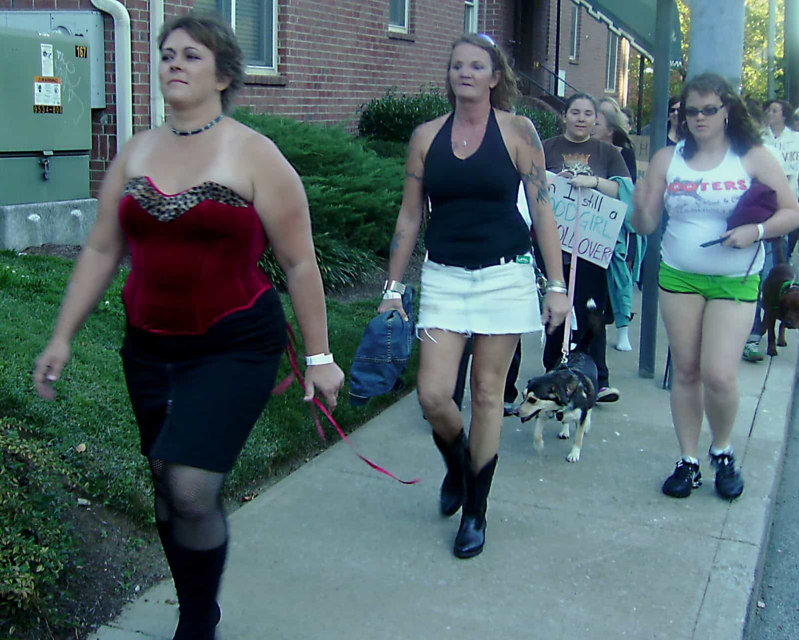
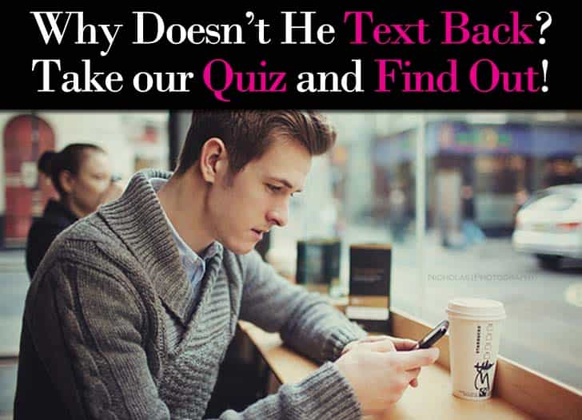
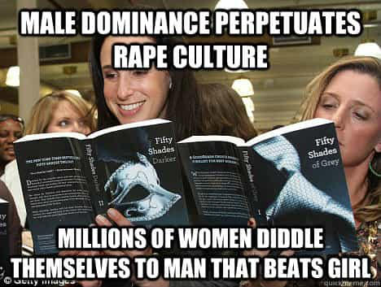

If our readers have paid attention to their social media feeds over the last week or so, many of them will have noticed countless virtue signals from the #MeToo campaign. A male feminist spinoff of this putrid witch-hunt, #IHave, is now comparing not responding to a girl’s text messages to abusing her sexually. Apparently “rape culture,” which is about as fictional as that giant annoying dog from The Neverending Story, is perpetuated by men not writing back to girls after they’ve had sex with them. Not texting a reply to her leads to rape, remember!
What we are witnessing is the realization by feminists and others that actual rape is at an all-time low. Still, people, SJWs most of all, need their boogeymen and scapegoats. Consequently, behaviors women themselves engage in (flaking, ignoring SMS invitations from interested males, etc.) are presently being equated with promoting rape when it is men who are performing them. “Ghosting,” an unspoken refusal to communicate with someone, is evidently such an affront to women that it has been included in the “rape culture” lexicon.
Of course, a perennial topic of game, including by Roosh in Bang, is dealing with girls who flake on dates, don’t text back, or fail to pick up the phone. If only Roosh’s readers and readers of Return Of Kings could accuse a woman of furthering “rape culture” every time she doesn’t respond to them! We could resolve common female antics almost overnight if that were the case.
Yes, this is real

Sweet Jesus. It’s hard to see how these girls are at risk of rape every day.
The virtue signals being offered by men at the moment may differ from one another somewhat, but this is the general sort of thing being plastered on Facebook and other social media platforms [the emphasis is mine]:
#Ihave
I have assumed she knew we were just “hooking up” on a regular basis with no strings attached.
I have stared way too long, not caring if she catches me checking her out.
I have gone ahead with sex without having the time or inner sensing to see if that is what I actually wanted.
I have ghosted someone after hooking up a few times.
I have assumed consent once is consent always.
I’ve used intoxication as an excuse for “coming on strong.”
I have emotionally hurt women I’ve cared about through sex.
I have leaned heavily on the emotional labor of woman to teach me how to be a better man to them.
I have tolerated “locker room talk.”
I have tolerated cat-calling by my friends.
I have wielded my “power-over” in many ways to get what I want.
I’m not a bad man, I’m waking up within a rape culture and learning everyday what it means to feed life instead of stealing it. I’m not posting this as a confession or in an effort to absolve my sins, but to give examples of how I’ve learned that I have contributed to rape culture in order to encourage other men to do the same.
#itwasme #ibelieveyou
– Copy/paste if you have ever contributed to harassment and rape culture or failed to confront or prevent it (modify as appropriate). Don’t leave it up to the women, gender non-conforming folks, and smaller number of men who have suffered sexual harassment, sexual assault and rape, to address a problem they didn’t cause.
(Note to other men: Please do not leave comments praising me for posting this. The focus is on survivors, not heaping unearned praise on men who had to hurt people to learn how to be decent humans. Feel free to share your own stories/apologies though.)
Let’s take a look at some of these points.
I have assumed she knew we were just “hooking up” on a regular basis with no strings attached.
What do women expect? With girls racking up historically high notch counts, the majority of relationships are not really relationships. In fact, as Return Of Kings has stated a number of times before, men are the real romantics, which is usually to their detriment. Most, if not all ambiguity about the nature of sexual relationships (random fuck or “I’m going to marry him”) would be removed if women valued their virginity and near-virginity more.
In the context of pathetic male apologies for “advancing rape culture,” #IHave recklessly throws consensual sex with a woman into the same basket as sexually abusing her. With so few examples going around of men beating girls in the head and forcibly penetrating them, a woman voluntarily entering a bed with you will now suffice as sexual assault if you do not later requite her feelings and pursue a long-term relationship with her.
I have stared way too long, not caring if she catches me checking her out.
Yes, because women dressed and behaving like the girl below, constituting an ever growing number amongst the fairer sex, are not trying to court any attention whatsoever. Worse still, they are obviously deeply traumatized when such attention comes their way:
I have ghosted someone after hooking up a few times.

a) Because he’s a rapist. b) Because he’s a rapist. c) Because he’s a rapist. d) Because he’s a rapist.
Incidentally, this is the tactic actress Charlize Theron is said to have used on Sean Penn when she dumped him. Before I heard about this, I knew what “ghosting” was in basic terms, but had never come across the word itself. Given the sad state of male thirst in today’s world, plus the time-honored, hardwired female practice of hypergamy, it’s a safe bet that women utilize this a lot more than men.
I have emotionally hurt women I’ve cared about through sex.
Remember, this is the age of the snowflake and subjectivity, not facts, are king. Ivy League students, touting themselves as the cream of the crop, have meltdowns over Halloween costumes. So God knows what can happen when a man rejects a woman he has had sex with or simply does not do what she wants in any relationship.
Western society is beset with a divorce rate above 50% and most women have many sexual partners before marriage. As a result, are we to believe that it is ever possible for a woman with a notch count of, say, ten men to have not been emotionally “hurt” multiple times by a sexual partner? And this says absolutely nothing about whether the feelings she has are rational or justifiable, let alone whether they should be mentioned alongside a crime like sexual assault or rape.
Are you ready for the total conflation of hurt female feelings and “rape”?

Well, let’s be honest. We have been approaching this outcome for a long while. Right now, however, the rot is accelerating beyond belief. The floodgates have well and truly opened with the downfall of Harvey Weinstein. Any slight a woman has suffered at the hands of a man (or concocted in her own mind) can be conveniently subsumed under a hashtag like #MeToo. No evidence is needed, only a Facebook or other social media post.
We should give the leftists credit—they have done a spectacular job in redirecting the focus onto the vague, otherwise easily disprovable idea of “rape culture” and away from the hypocrisy of liberal Hollywood. Likewise, the collapsing of real crimes like rape onto normal male behavior or, at worst, bad manners is steadily ensuring that the definition of sexual abuse is whatever hurts a woman’s feelings.
Got your sex consent forms ready yet, gentlemen?
Read More: Orally Raping A Man Won’t Get You Indicted In America